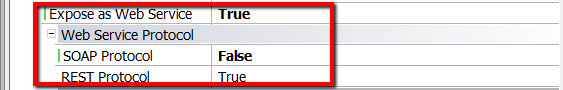

The Procedure object can be exposed as a Rest web service through the following configuration:
 REST Procedures must be called through HTTP POST method and always use JSON data representation. The endpoint URI for Procedures is: <server uri>/rest/<procedure> If the data provider belongs to a Module, the endpoint URI is <server uri>/rest/<module>/<procedure> For example, if the module is "module2" under "module1", the URL would be: <server uri>/rest/module2/module1/<procedure> When calling the Rest procedure service, the parameters have to be sent to the service in the body of the HTTP request and have to be in JSON format. Java: The URI always without package name (only with de name of the Procedure). Important: The parameters have to be in CamelCase in the JSON body (according to the parameters of the parm rule of the procedure). Note:
Go on reading HowTo: Consuming a Procedure exposed as a Rest service
|
| Backlinks | ||
| Documenting RestFul services | Generate OpenAPI interface property | |
| OpenAPI import tool | REST Protocol property | Toc:Rest web services in GeneXus |